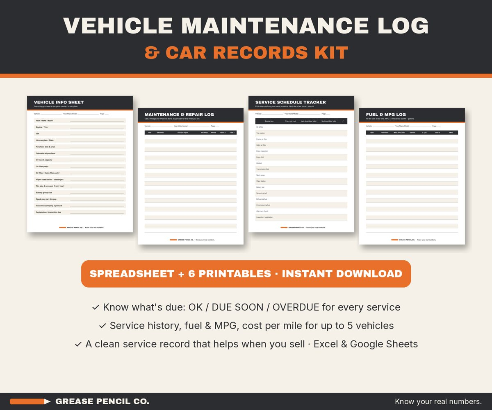
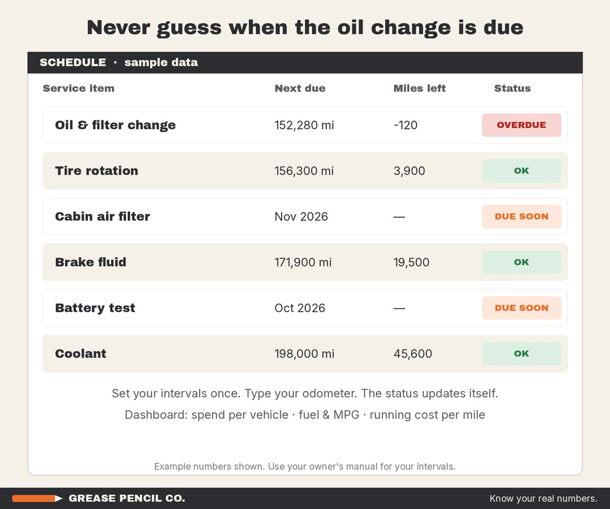
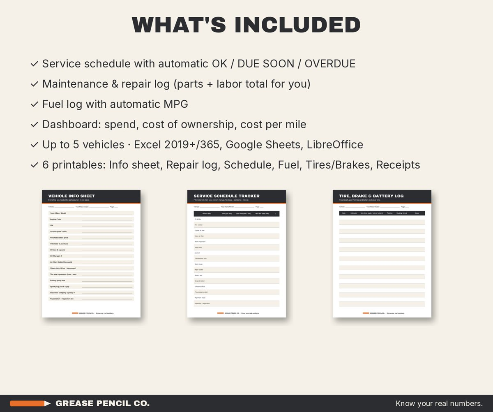

Vehicle Maintenance Log & Car Records Kit
$5.99 instant download
A vehicle maintenance log spreadsheet that shows when every service is due (OK, due soon or overdue), logs repairs and fuel with automatic MPG, and totals what each vehicle costs per mile. Up to 5 vehicles, plus 6 printable logs. Excel and Google Sheets.



What's included
- A service schedule: set intervals by miles and months, type your odometer, and each item shows OK, DUE SOON or OVERDUE
- A maintenance and repair log with parts and labor totals, DIY or shop
- A fuel log that works out MPG automatically
- A dashboard with spend per vehicle, total cost of ownership, running cost per mile, average MPG and overdue count
- Room for up to 5 vehicles, with VIN, plate and purchase details
- 6 printables: vehicle info sheet, repair log, service schedule, fuel and MPG log, tire/brake/battery log, and receipts and warranty record
Who it's for
DIYers, families with more than one car, anyone planning to sell a car (buyers ask for service records), and mobile mechanics who want to hand customers a clean record.
This is a digital download, so nothing is shipped. It's a tool for organizing and estimating your numbers, not financial, tax or legal advice. Free guide: Car maintenance schedule by mileage and how to keep car maintenance records.